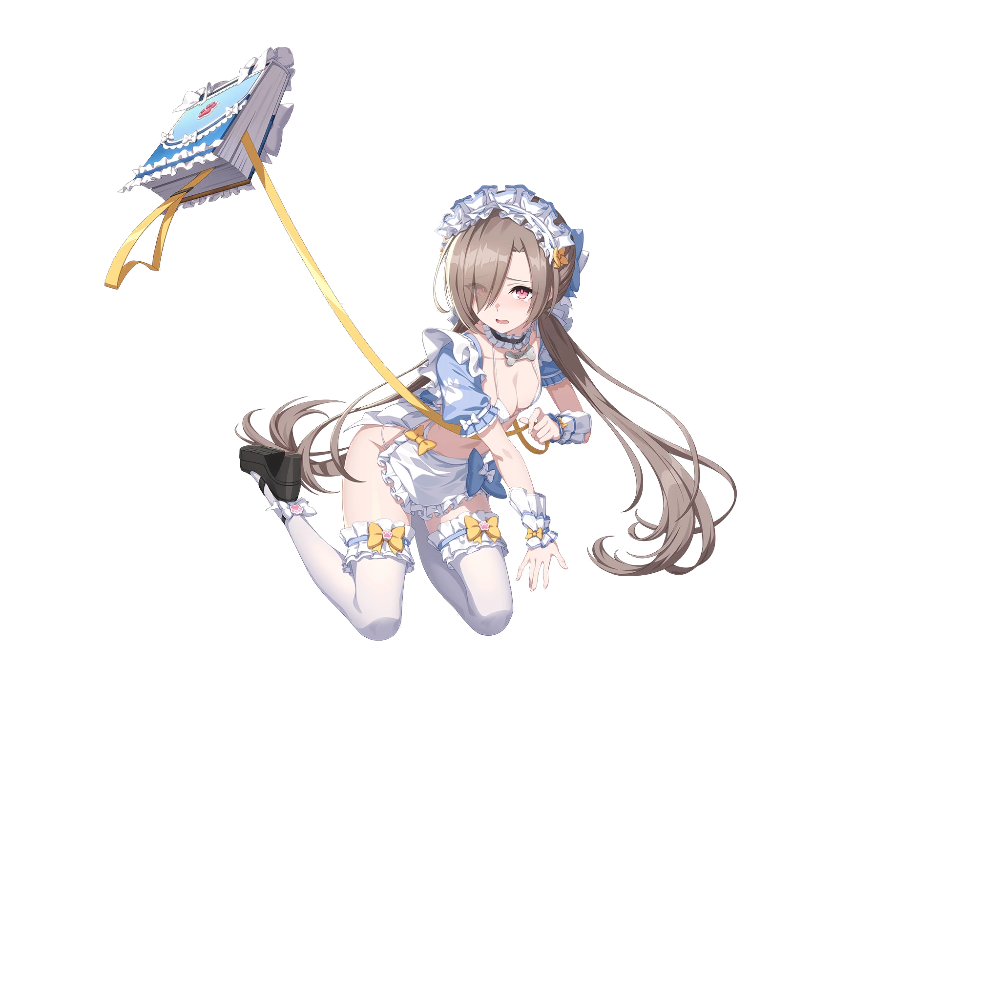

서부 탈환대의 부대장. 언제나 세레스를 옆에서 보좌하고 있다. 언제나 생글생글 웃고 있지만 그 미소의 안쪽에는 어둠이 도사리고 있다.
생일 6월 18일신장 156cm출신 서부 재난 지대소속 서부 탈환대CV KR 장미CV JP 아이자와 사야
일러스트

리디아의 공격력이 15% 증가합니다. 리디아가 최초 전투 시작 시 자신을 제외한 공격력이 가장 높은 아군에게 책임 전가(해제불가)를 발생시킵니다. 책임 전가(해제불가) 상태인 아군이 턴 시작 시 자신에게 퇴근 재촉(해제불가)을 2회 발생시키고 해당 아군이 해당 아군 턴에 타격 후 타격한 대상의 수만큼 자신에게 퇴근 재촉(해제불가)을 발생시키며 타격 당 최대 5회까지 발생합니다. 책임 전가(해제불가) 상태인 아군이 해당 아군 턴에 타격 후 자신의 퇴근 재촉(해제불가) 중첩 횟수가 5회 이상이면 자신의 행동 게이지를 30% 증가시킵니다. 행동 게이지 증가는 1턴에 1번만 발생합니다. 타격 시 자신의 냉각 스택에 비례하여 피해량이 4%씩 증가하고 퇴근 재촉(해제불가) 중첩 횟수가 5회 이상이면 피해량이 추가로 30% 증가합니다. 타격 후 퇴근 재촉(해제불가) 중첩 횟수가 5회 이상이면 퇴근 재촉(해제불가)를 5회 감소시킵니다.
책임 전가(해제불가)
공격력과 치명타 피해가 15% 증가합니다.
퇴근 재촉(해제불가)
리디아가 퇴근을 재촉합니다. 최대 10회 중첩됩니다.
스킬 레벨 정보
Lv.1 행동 게이지 +20%
Lv.2 공격력 +5% · 행동 게이지 +20%
Lv.3 공격력 +10% · 행동 게이지 +25%
Lv.4 공격력 +15% · 행동 게이지 +30%
리디아가 파렴치한 적을 먼지떨이로 공격합니다. 자신에게 냉각 스택을 1개 부여합니다.
노바 버스트 타격 시 일시적으로 자신의 강인도 고정 피해가 1 증가하고 피해량이 10% 증가합니다. 타격 후 자신에게 쌓여가는 수치심(해제불가)을 2회 발생시킵니다.
냉각
태양 속성 유닛에게 주는 피해량이 1% 증가합니다. 최대 5스택까지 적용됩니다. 부스트 효과는 강화/약화 효과와 무관하게 독립적으로 적용됩니다.
쌓여가는 수치심(해제불가)
치명타 피해가 1%씩 증가합니다. 최대 30회 중첩됩니다.
스킬 레벨 정보
Lv.1 기본 효과
Lv.2 피해량 1% 증가
Lv.3 피해량 1% 증가
Lv.4 피해량 1% 증가
Lv.5 피해량 1% 증가
Lv.6 피해량 2% 증가
Lv.7 피해량 2% 증가
Lv.8 피해량 2% 증가
Lv.9 피해량 2% 증가
Lv.10 피해량 3% 증가
이걸 다 언제 해요!특수기 · 단일 · 쿨다운 3
끝나지 않는 일에 분노한 리디아가 쿠쿠의 힘으로 적을 공격합니다. 자신에게 쌓여가는 수치심(해제불가)을 2회 발생시킵니다. 자신의 턴에 사용 시 자신의 퇴근 재촉(해제불가) 중첩 횟수가 5회 이상이면 이걸 다 언제 해요! 대신 더는 못 참아요!를 사용합니다.
더는 못 참아요! : 끝나지 않는 일에 분노한 리디아가 쿠쿠의 힘으로 적 전체를 공격합니다. 타격 시 자신의 피해량이 100% 증가하고 타격 후 자신에게 쌓여가는 수치심(해제불가)을 4회 발생시킵니다.
노바 버스트 타격 시 일시적으로 자신의 강인도 고정 피해가 1 증가합니다.
쌓여가는 수치심(해제불가)
치명타 피해가 1%씩 증가합니다. 최대 30회 중첩됩니다.
스킬 레벨 정보
Lv.1 기본 효과
Lv.2 피해량 1% 증가
Lv.3 피해량 1% 증가
Lv.4 피해량 1% 증가
Lv.5 피해량 1% 증가
Lv.6 피해량 2% 증가
Lv.7 피해량 2% 증가
Lv.8 피해량 2% 증가
Lv.9 피해량 2% 증가
Lv.10 피해량 3% 증가
제 잘못이 아닌걸요?궁극기 · 단일 · 쿨다운 6
리디아가 자신의 잘못을 뒤집어씌워 적을 공격합니다. 자신에게 쌓여가는 수치심(해제불가)을 3회 발생시킵니다. 자신의 턴에 사용 시 자신의 퇴근 재촉(해제불가) 중첩 횟수가 5회 이상이면 제 잘못이 아닌걸요? 대신 거 미안하게 됐네요!를 사용합니다.
거 미안하게 됐네요! : 리디아가 자신의 잘못을 뒤집어씌워 적 전체를 공격합니다. 타격 시 자신의 피해량이 100% 증가하고 타격 후 자신에게 쌓여가는 수치심(해제불가)을 6회 발생시킵니다.
노바 버스트 타격 시 일시적으로 자신의 강인도 고정 피해가 1 증가합니다.
쌓여가는 수치심(해제불가)
치명타 피해가 1%씩 증가합니다. 최대 30회 중첩됩니다.
스킬 레벨 정보
Lv.1 기본 효과
Lv.2 피해량 2% 증가
Lv.3 피해량 2% 증가
Lv.4 쿨타임 1턴 감소
Lv.5 피해량 2% 증가
Lv.6 피해량 3% 증가
Lv.7 피해량 3% 증가
Lv.8 쿨타임 1턴 감소
Lv.9 피해량 3% 증가
Lv.10 피해량 5% 증가
전용 부적
복종의 초커
수상쩍은 경매에서 비싸게 거래되는 초커. 목줄과 강아지 장난감 모양 장식은 구매자의 취향이라고 한다.
턴 시작 시 자신에게 퇴근 재촉(해제불가)을 3회 발생시킵니다. 타격 시 자신의 퇴근 재촉(해제불가) 중첩 횟수가 5회 이상이면 타격 후 최대 생명력이 가장 높은 적에게 저리 가라고요!를 발동하고 자신의 모든 스킬 쿨타임을 1턴 감소시킵니다.